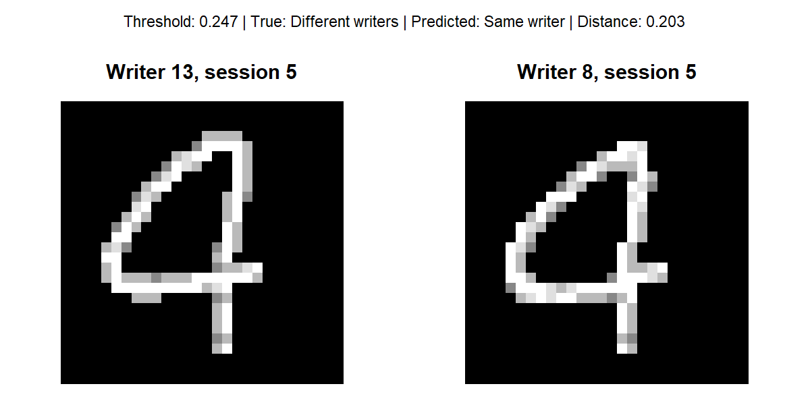
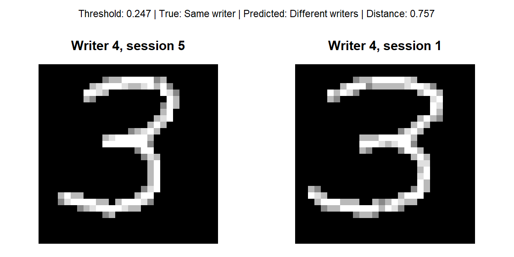

Data Science for Industry
1 Appendix
Figure 1 shows 2 images with the digit ‘4’ written by writers 13 and 8 respectively. Both were written in session 5. The siamese network calculated a difference of 0.203 between their embeddings. Since this is lower than the distance threshold value (0.247), the images were incorrectly classified as being written by the same person. To the human eye, the 2 digits do look fairly similar.

Figure 2 depicts images of the digit ‘3’ being written by writer 4 during sessions 5 and 1. The calculated distance between their embeddings was 0.757 which is considerably higher than the distance threshold, leading to the images being incorrectly classified as originating from different writers. Slight differences are visible to the human eye, such as the difference in width between the numbers in the 2 images.

All analyses were conducted in R (R Core Team, 2026), and used the following packages:
- keras3 (Kalinowski et al., 2026) for neural network model building and training
- tidyverse (Wickham et al., 2019) for convenient data manipulation
- imager (Barthelme, 2025) for image processing and manipulation
- pROC (Xavier et al., 2011) for calculation of the area under the curve
- reticulate (Kalinowski et al., 2026) for interfacing between R and Python, enabling the use of the TensorFlow backend
Seeds were set throughout the analyses to ensure reproducibility of results.
2 References
R Core Team (2026). R: A Language and Environment for Statistical Computing. R Foundation for Statistical Computing, Vienna, Austria. doi:10.32614/R.manuals https://doi.org/10.32614/R.manuals. https://www.R-project.org/.
Kalinowski T, Allaire J, Chollet F (2026). keras3: R Interface to ‘Keras’. doi:10.32614/CRAN.package.keras3 https://doi.org/10.32614/CRAN.package.keras3. R package version 1.5.1, https://CRAN.R-project.org/package=keras3.
Wickham H, Averick M, Bryan J, Chang W, McGowan LD, François R, Grolemund G, Hayes A, Henry L, Hester J, Kuhn M, Pedersen TL, Miller E, Bache SM, Müller K, Ooms J, Robinson D, Seidel DP, Spinu V, Takahashi K, Vaughan D, Wilke C, Woo K, Yutani H (2019). “Welcome to the tidyverse.” Journal of Open Source Software, 4(43), 1686. doi:10.21105/joss.01686 https://doi.org/10.21105/joss.01686.
Barthelme S (2025). imager: Image Processing Library Based on ‘CImg’. doi:10.32614/CRAN.package.imager https://doi.org/10.32614/CRAN.package.imager. R package version 1.0.8, https://CRAN.R-project.org/package=imager.
Xavier Robin, Natacha Turck, Alexandre Hainard, Natalia Tiberti, Frédérique Lisacek, Jean-Charles Sanchez and Markus Müller (2011). pROC: an open-source package for R and S+ to analyze and compare ROC curves. BMC Bioinformatics, 12, p. 77. DOI: 10.1186/1471-2105-12-77 http://www.biomedcentral.com/1471-2105/12/77/
Kalinowski T, Ushey K, Allaire J, Tang Y (2026). reticulate: Interface to ‘Python’. doi:10.32614/CRAN.package.reticulate https://doi.org/10.32614/CRAN.package.reticulate. R package version 1.47.0, https://CRAN.R-project.org/package=reticulate.
OpenAI (2026) ChatGPT [Large language model]. Available at: https://chatgpt.com/ (Accessed: 16 October 2026).